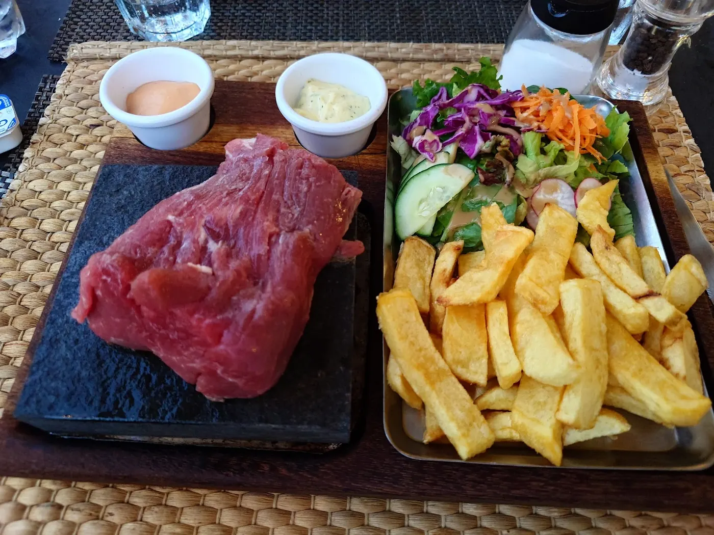
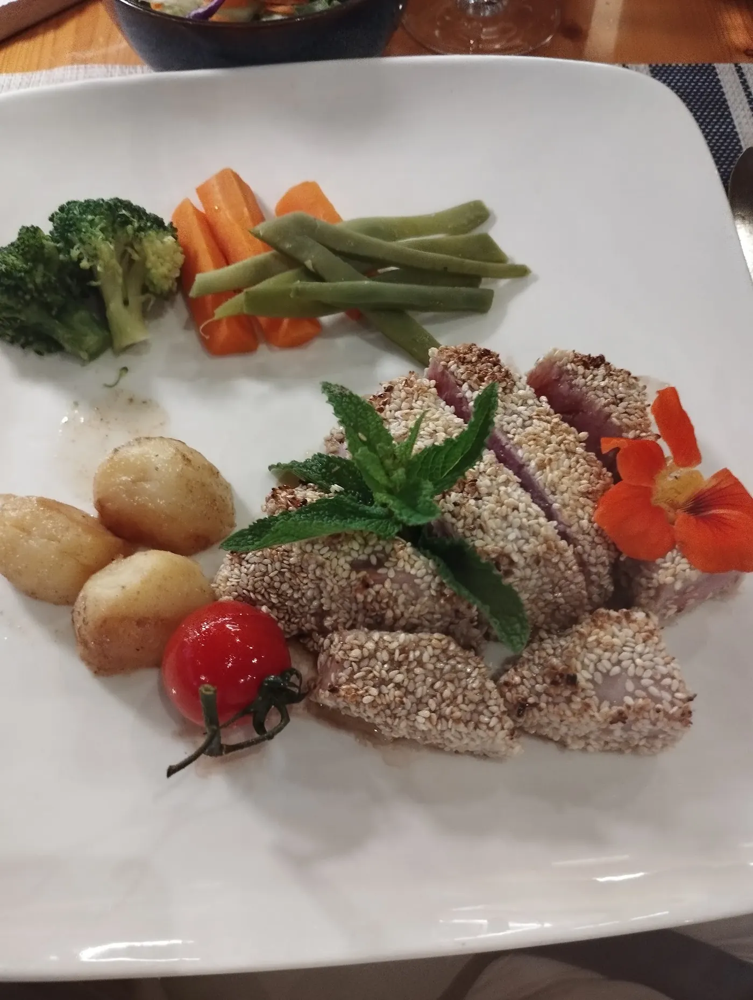
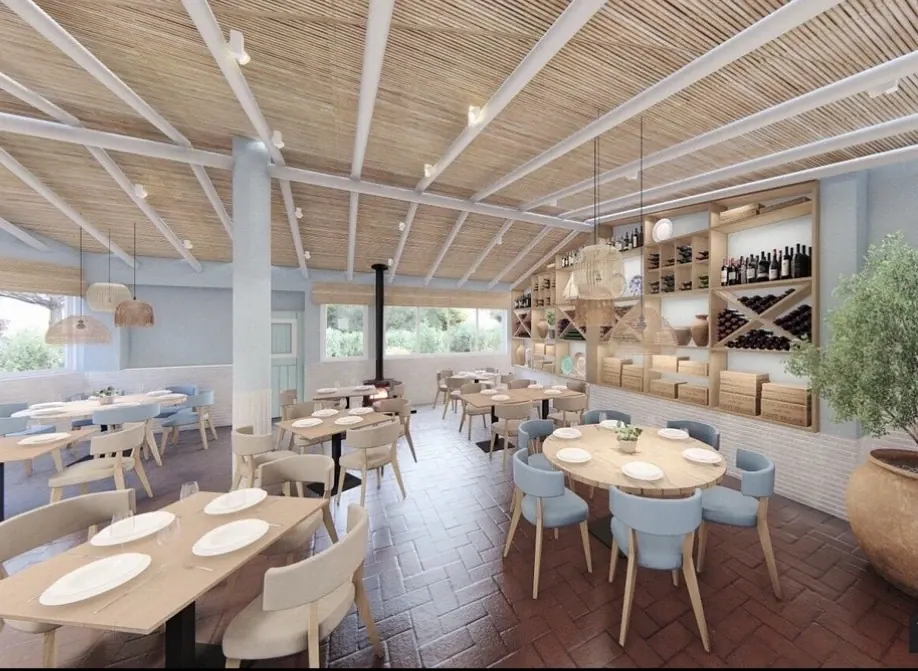
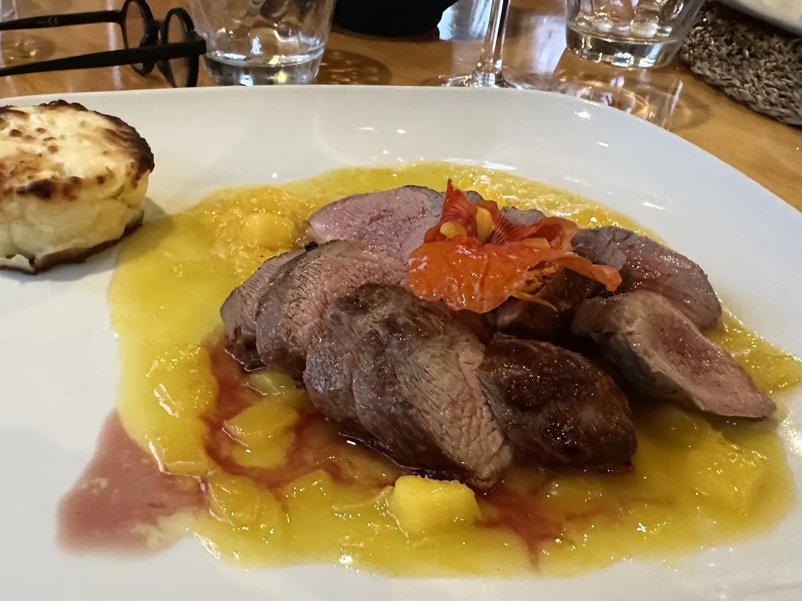
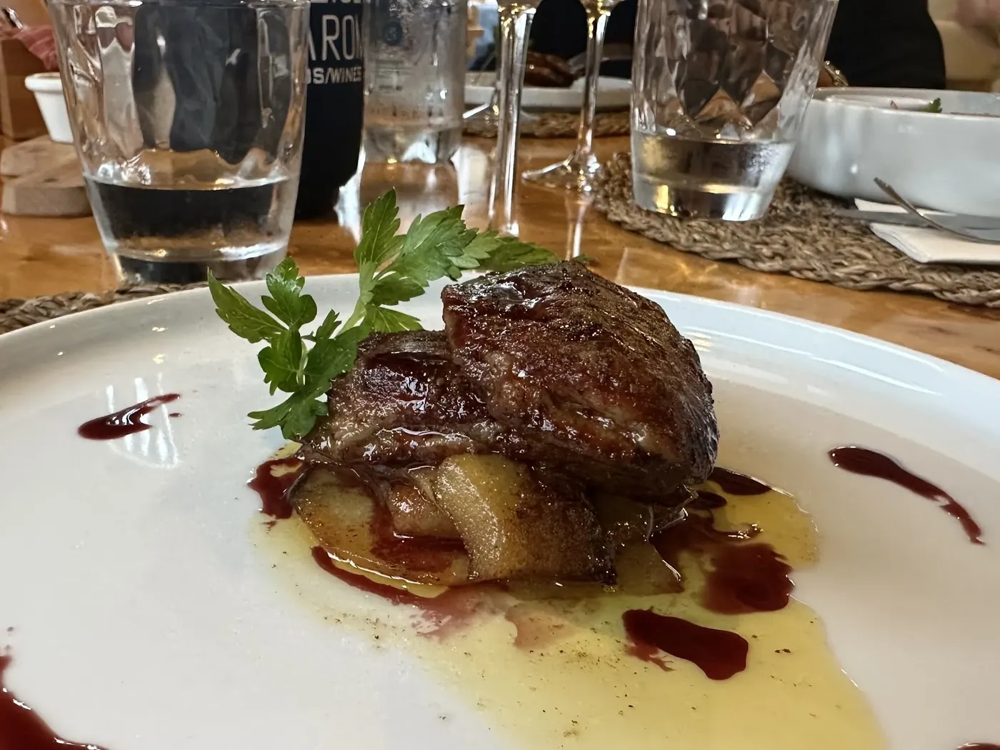
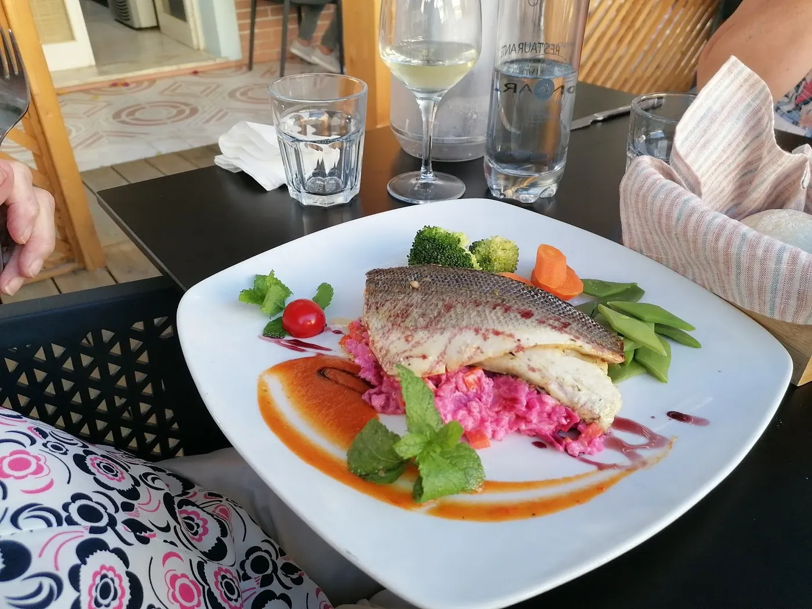
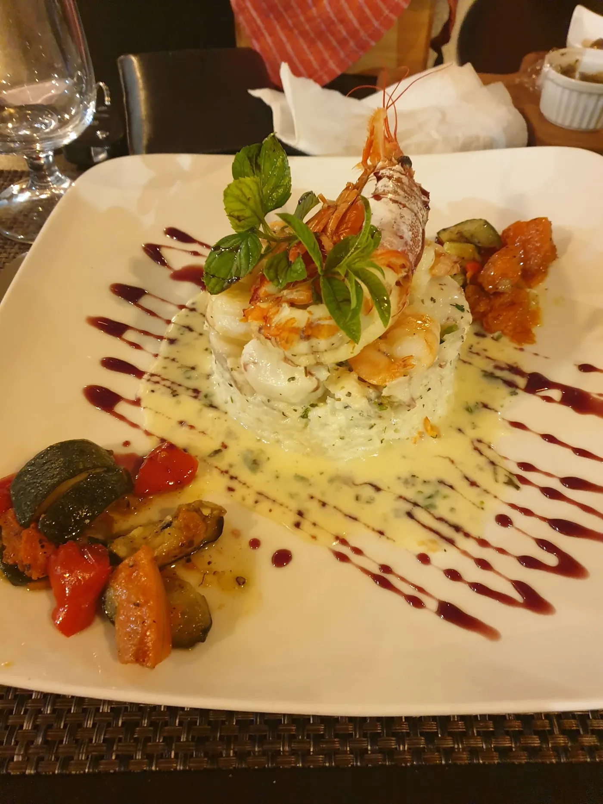

Lombo na pedra
Chega cru à pedra quente e cada um acaba-o a seu gosto, fatia a fatia. Batata frita caseira e salada.
21,00 €
Moncarapacho · almoço e jantar, de segunda a sexta
Cozinha portuguesa com algumas viagens pelo meio: caril de camarão, chamuças, atum em sésamo, lombo a acabar na pedra. Escolha na toalha — a conta faz-se na margem.
—
4,6802 avaliações no Google

atum braseado, crosta de sésamo · 15,50 €
Hoje na toalha
—
Os pratos do dia são escritos aqui pela casa. Para já, três pratos da carta. pratos do dia a confirmar

Chega cru à pedra quente e cada um acaba-o a seu gosto, fatia a fatia. Batata frita caseira e salada.
Rosado por dentro, com salada e balsâmico de limão.
Com arroz basmati. Uma das viagens da carta.
Preços da carta de 2023 da casa. a confirmar
802 avaliações no Google.
O que se diz da casa

A casa
Lá dentro, vigas brancas sobre o teto de cana, paredes azul-claro e uma oliveira num vaso de barro. Lá fora, mesas para as noites quentes. Ar condicionado para os dias de calor.
Ver a casaInício / Carta
Toque num prato para o pôr na conta, na margem. Ao reservar, os pratos seguem na mensagem e a cozinha fica a saber o que lhe apetece.
preços de 2023 · a confirmarIVA incluído. Informe-nos de alergias ou intolerâncias alimentares.
Início / A casa
Na Avenida Dona Maria Lizarda Palermo, em Moncarapacho. Almoço e jantar de segunda a sexta; ao fim de semana descansa.
Vigas brancas debaixo do teto de cana, candeeiros de vime, uma parede de vinhos, cadeiras azul-claro e chão de tijoleira em espinha. No inverno, uma salamandra ao canto.
Lá fora há mesas para as noites de verão. Lá dentro, ar condicionado e wi-fi grátis.
Segunda a sexta, 12:00–14:45 e 18:30–22:00. Sábado e domingo fechado.
Dinheiro, cartão de débito, Mastercard, VISA e contactless.
Mesas lá fora, ar condicionado, wi-fi grátis e entrada acessível a cadeiras de rodas.
Bom saber
A própria carta pede para avisar de alergias ou intolerâncias alimentares. Escreva-o na nota da reserva e segue com a mensagem.
Início / Galeria
Como os pratos chegam à mesa: pratos quadrados, molho desenhado à colher, uma flor aqui e ali.




Início / Reservar
Escolha o dia, a hora e quantos são. A mensagem sai escrita para o WhatsApp do restaurante: só tem de carregar em enviar.
Chamada para a rede móvel nacional.
Avenida Dona Maria Lizarda Palermo, 14B
8700-085 Moncarapacho, Olhão
| Segunda | 12:00–14:45 · 18:30–22:00 |
| Terça | 12:00–14:45 · 18:30–22:00 |
| Quarta | 12:00–14:45 · 18:30–22:00 |
| Quinta | 12:00–14:45 · 18:30–22:00 |
| Sexta | 12:00–14:45 · 18:30–22:00 |
| Sábado | Fechado |
| Domingo | Fechado |